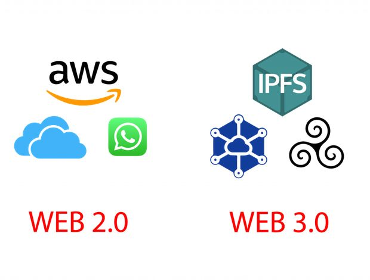

Web 2.0La Web 2.0 se refiere a la evolución de la web hacia una plataforma más interactiva y colaborativa. Permite a los usuarios crear y compartir contenido de manera más sencilla. Características:
|
 |
Web 3.0La Web 3.0, también conocida como la web semántica, busca mejorar la interacción de los usuarios con la web utilizando tecnologías avanzadas como la inteligencia artificial y el aprendizaje automático. Características:
|